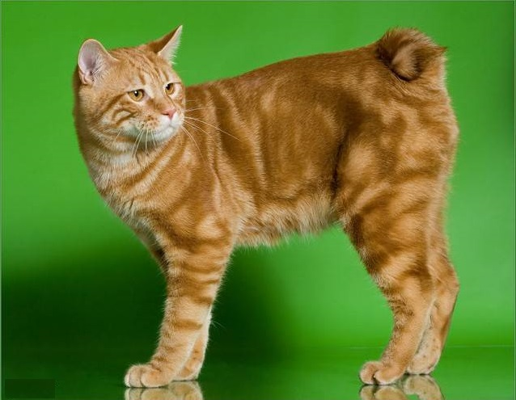
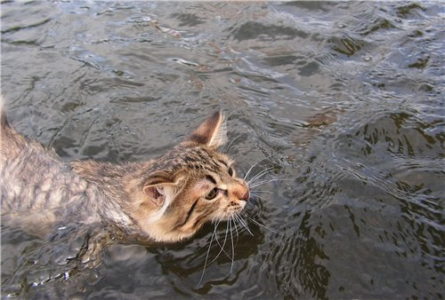
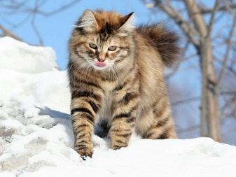
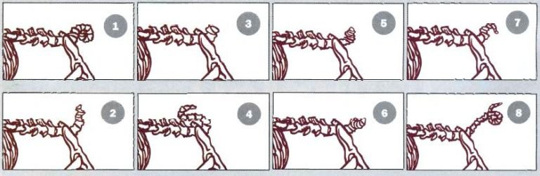
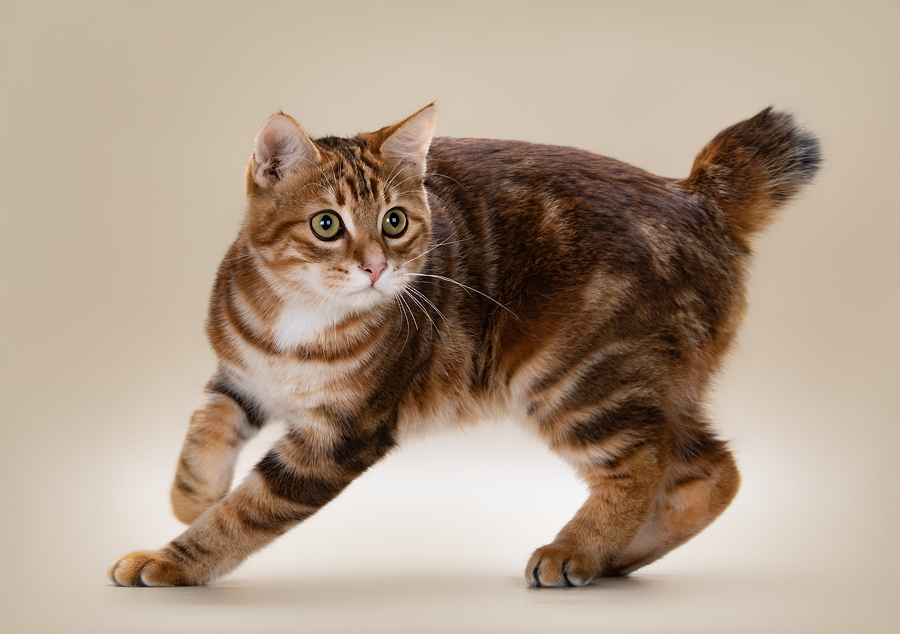
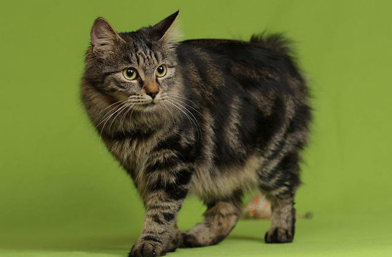
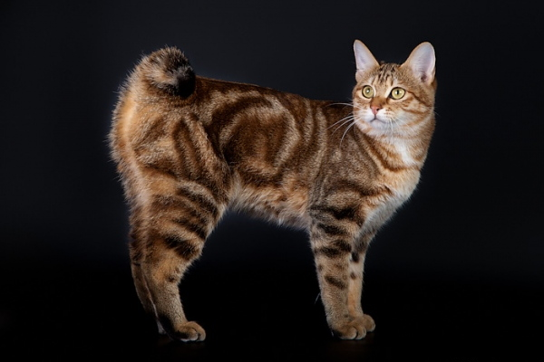

История породы
Родиной этой породы считаются Курильские острова Кунашир и Итуруп, откуда в конце XX века курильский бобтейл был завезён на материк.Существует несколько версий происхождения породы. Основной считается происхождение породы от метисации кошек породы японский бобтейл с завезенными моряками на Курильские острова кошками сибирской породы. Первым шагом в развитии породы, уже получившей рабочее название «Курильский бобтейл», стало создание предварительного стандарта в Советской Фелинологической Федерации (СФФ). Уже по результатам первых вязок стало видно, что тип курильских кошек и короткий хвост наследуется стабильно, «хвост-помпон» не связан ни с какими вредными для здоровья кошек аномалиями. 21-го октября 1991 года СФФ приняло первый стандарт курильских бобтейлов. На семинаре экспертов-фелинологов 4 декабря 1994 года Россия предложила доработать стандарт СФФ по аборигенным породам и подготовить материалы для утверждения новой породы WCF (World Cat Federation). По состоянию на 9 июня 2009 года WCF и FIFe признают две породы курильского бобтейла: полудлинношёрстную и короткошёрстную, как и TICA, но при этом они не имеют возможности получить статус чемпиона на выставках.
Описание породы
Курильский бобтейл — короткохвостые, с «хвостом-помпоном», кошки. Не боятся воды и низких температур, отличные рыболовы. Очень активны и игривы. Настоящие охотники, крысоловы. Из-за отсутствия нормального хвоста их тело сбалансировано увеличенными задними ногами. Они длиннее передних ног и мощнее, чем у кошек других пород. Что позволяет курильским бобтейлам совершать длинные, высокие прыжки. Дружелюбны, любопытны, умны и очень сообразительны, проявляют привычки собак — бегают за игрушкой, приносят её. Преданы своим хозяевам, как правило, выбирают одного-двух, любят путешествовать с хозяином. Аборигенные бобтейлы на Курильских островах — это полудлинношёрстные кошки дикого окраса (n22).
  Строение хвоста курильского бобтейла
1. "Спиралька" (закрученная вниз вбок)
2. "Метёлка"
3. "Пенёк" (предельно укороченный)
4. "Спиралька" (по типу "Рыболовный крючок")
5. "Пенёк" (по типу "Спиралька")
6. "Спиралька" (закрученная вбок и назад)
7. "Пенёк" (с отростком)
8. "Отодвинутый бобтейл"
Стандарт породы по WCF
Стандарт породы признает две вариации курильских бобтейлов: Короткошёрстные (KBS) — шерсть короткая, прилегающая, с развитым покровным волосом, плотной остью и умеренно развитым подшерстком. Полудлинношёрстные (KBL) — слабо развитый покровный волос, обильный остевой и остепокровный волос и плотный подшерсток. Желательно полное развитие «воротника», «штанишек» и кисточек на ушах. Тело компактное, мускулистое, со слегка дугообразной спиной и приподнятым крупом. Конечности крепкие, задние ноги длиннее передних, лапы круглые. Хвост должен иметь заломы и изгибы, один или несколько узлов в различных сочетаниях. Длина без учёта шёрстного покрова от 3 до 8 см. Шерсть на хвосте длиннее, чем на остальных частях тела, и образует помпон.
 Курильский бобтейл с короткой шерстью
Голова крупная, трапециевидной формы, с плавными контурами. Профиль с небольшим переходом. Скулы широкие, морда средней длины, довольно широкая, плавных очертаний. Подбородок хорошо развит. Уши средней величины, широкие и открытые у основания, довольно высоко поставлены, слегка наклонены вперед. Расстояние между ушами примерно равно ширине уха. Кончики закруглены. Глаза округлые, поставлены широко и под небольшим углом. Цвет глаз должен гармонировать с окрасом шерсти. Шерсть короткая, с хорошо развитым остевым волосом и слабо выраженным подшерстком. Окрасы: не признаются окрасы в любых комбинациях шоколадный, лиловый, циннамон, фавн (в том числе тэбби, биколор, триколор), а также акромеланические (колорпойнт) окрасы. Все другие окрасы признаны. Считающиеся недостатками признаки: хвост от 8 до 12 см или короче 3 см. Эффект отодвинутого бобтейла; только один хвостовой позвонок; слишком сильно изогнутая спина. Признаки, по которым животное подлежит дисквалификации: отсутствие хвоста, короткий прямой хвост, длина хвоста более 12 см. Примечание: запрещены скрещивания с другими породами. В классе новичков требуется подтверждение импорта с Курильских островов.
Материал взят с Википедии - Свободной энциклопедии.